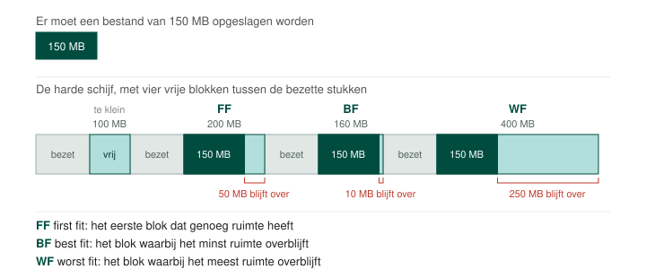

Het FAT bestandssysteem gebruikt First Fit wat spijtig genoeg tot maximum fragmentatie in een zeer korte tijd leidt. Wanneer een bestand moet worden opgeslagen wordt het eerste vrije blok dat gevonden wordt op de harde schijf, gebruikt om die data daarin op te slaan.
Best Fit is, in tegenstelling tot wat de naam doet vermoeden, eigenlijk ook niet zo goed geschikt om bestanden efficiënt op te slaan. Het blok waarbij het minst ruimte overblijft wordt gekozen maar vaak groeien bestanden in tijd. Denk aan een Word document of een logboek. Dit zorgt dus zeer snel voor fragmentatie van het bestandsysteem.
Eigenlijk is Worst Fit het algoritme waarbij het minst kans is op fragmentatie. Dit is logisch want bestanden krijgen ruimte om te groeien of te krimpen.
Op zich is fragmentatie helemaal niet erg. Het verkleint zelfs de kans dat een bestand onherroepelijk beschadigd wordt door een head crash. Het is de vertraging die wordt veroorzaakt door de herpositionering van de arm van onze klassieke harde schijf die ervoor zorgt dat fragmentatie als nadelig wordt ervaren.
